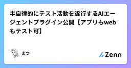

Zennの「QA」のフィード
フィード

OTPテストが不安定なとき、先に切り分けるべきはアプリではなく受信箱だ
Zennの「QA」のフィード
この記事は、公開されている製品ページとAPIドキュメントを整理したアイデアです。内部実装やベンチマークには触れていません。検証コード付きのサインアップやパスワードリセットが「たまに落ちる」とき、原因をアプリに寄せすぎていないか、という切り分けの話です。 チーム用のGmailを一つ用意して、OTPフォルダで運用するやり方はよく見ます。手元のテストランナーはコミットごとに新しくなっても、受信箱だけは残り続けます。その結果、次のような失敗が一つの赤いステップに折りたたまれます。 別ジョブが先に同じ未読メールを開いた 前の環境のメールを、今の実行のメールだと読んだ アプリは送っているが、見ている...
2日前
Androidアプリの複数バージョン検証で、毎回やっている確認項目を整理した（10・11・12・15）
Zennの「QA」のフィード
小さなチームでAndroidアプリのリリース前確認をするとき、私が毎回使っているチェック項目をまとめました。端末はクラウドの実機環境（私が仕事で関わっている DuoPlus を使っています。利害関係があるので先に書いておきます）でも、手元の実機でも同じように使える内容にしています。 全部のバージョンを見るのは現実的ではないので、私は次の4つに絞っています。 Android 10：サポート対象の下限として Android 11：スコープ付きストレージや権限まわりの差分確認 Android 12：通知・スプラッシュ画面まわりの差分確認 Android 15：最新の挙動確認 ユーザー分布によっ...
3日前
ソフトウェアテストを検査しよう【Advanced編】
Zennの「QA」のフィード
本記事はスクフェス三河2026で発表した内容を元に再構成した内容です。 ちなみに動画は以下。 なお、本記事はアジャイル実践者（もちろんここにはテスターも含まれます）が、さらに一歩深めるための【Advanced編】として執筆しています。 基礎的な考え方から紐解けるような、なんならより実戦で活用できる【ビギナー編】については別記事として公開したいと思っています。 また、昨年のスクフェス三河2025で発表した「透明性」に関する記事の続編とも言える位置づけになっていますので、以下の内容もぜひご覧ください。 ソフトウェアテストが持つ「透明性」の側面 やまずん - テストを使って透明性を獲得しよう ...
4日前

ブラックボックステストのテストケース設計：4つの技法を具体例で理解する
Zennの「QA」のフィード
この記事は、Keploy ブログに英語で公開された Black Box Testing and White Box Testing: A Complete Guide の日本語訳です。 ブラックボックステストは、ソフトウェアの振る舞いを外側から評価します。テスターは内部のコードを知らないまま入力と出力を検証するため、機能テストや受け入れテストに適しています。ホワイトボックステストは、内部のコード、ロジック、構造を直接調べ、外からは見えないセキュリティの脆弱性やロジックのエラーを見つけます。成熟したチームのほとんどは両方を使います。ブラックボックスでユーザーが体験することを、ホワイトボック...
4日前

半自律的にテスト活動を遂行するAIエージェントプラグイン公開【アプリもwebもテスト可】 1
1
Zennの「QA」のフィード
仕様とテストするアプリを渡すと、テスト計画 → テストケース作成 → テスト実行 → 不具合報告 → 不具合確認や追加テスト → テストレポートまでのテスト活動をAIエージェントが柔軟に進めてくれるClaudeのプラグインを作りました。 ▶実際にテスト活動を行い出力されたテストレポート 要求仕様の整理からリスク分析、テスト計画、分析・設計、テストケース作成、E2E自動テストのスクリプト作成、テスト実行、不具合報告、テストレポートまで、全部を遂行します。また新しい発見があったり、変更があったりしたときはそれに合わせテストを追加など柔軟に対応します。ただ、人がそのテスト活動が妥当か、結果が妥...
5日前

メール認証を E2E テストの状態遷移として設計する
Zennの「QA」のフィード
本稿は公開されている画面・説明を手掛かりにしたテスト設計の提案であり、特定サービスの内部実装、配信基盤、性能、SDK の挙動を示すものではない。メール認証を E2E で扱うとき、受信箱を「外部の画面」ではなく、状態遷移の観測点にする。 共有アドレスを使うと、並列実行した別シナリオのメール、前回のリンク、運用通知が同じ場所に混ざる。「最新のメール」を取得する実装は、たまたま成功した別のメールを選ぶ余地を持つ。 TempMail AI のような一時的な受信先を使う場合も、目的は単にアドレスを増やすことではない。1 シナリオに 1 受信箱を対応させ、どの入力がどの観測結果につながったかを追える...
5日前

異動直後にAIで要点だけ理解をブーストするのを諦めて、丁寧にコードリーディングを始めました
Zennの「QA」のフィード
こんにちは。特撮熱が爆上がり中のbun913と申します。 皆さんは異動や転職の直後に「早くキャッチアップしなきゃ」と焦った経験はありませんか？私はあります。 私はQAエンジニアとして働いており、2026年10月に部署を異動したのですが、異動先のプロダクトはこれまで担当していたものとはまったく異なるため、ドメイン知識を一から覚え直す必要がありました。 最初は、重要そうな箇所や疑問をもったところだけピンポイントでAIに解説してもらい、効率よく理解を深めようと工夫していました。ですが、それではどうにも納得感が得られず、書籍「部下としてのAI」をきっかけに、時間をかけてでもコードを丁寧に読むこと...
6日前
曖昧な受け入れ基準が招く「話が違う」を、工事立会いの経験から考える
Zennの「QA」のフィード
Zennのトレンドに上がっていた「堅牢な受け入れテストを書くには？」という記事を読んで、真っ先に思い出したのは工場の床だった。私は機械メーカーの営業として2006年から2009年まで名古屋で働き、設置工事の立会いと顧客との検収調整を担当していた。ソフトウェアの受け入れテストは、仕様を満たしているかを機械的に検証する作業として語られることが多い。しかし現場の検収は、もう少し人間臭いものだった。契約書や仕様書には「正常に稼働すること」「ちゃんと動くこと」といった言葉が普通に書かれていて、それをめぐって現場で解釈がぶつかる。合格基準が曖昧なまま工事が終盤に差し掛かると、顧客側の担当者と自分たち...
6日前

異常系テストとプロパティベーステストで見つけた不具合と不具合の6つの型
Zennの「QA」のフィード
この記事は、個人ブログに掲載した記事の転載です。 このサイトの運営の裏側の話です。 先日、ある方のブログ記事を読みました。「本番のトラブルは、たいてい『異常な場合』を確かめていないことから起きる」という内容で、読みながら、自分のブログはどうだろう、と思いました。 まずブログで試したところ、不具合が3つ見つかりました。面白くなって、そのまま自分の作った仕組み全部に点検を広げました。画面まわり14か所、裏側の仕組み18か所、道具として使っているプログラム5か所。ブログと合わせて38か所です。追加したテストは、全部で約1,500件になりました。 見つかった不具合は、場所はばらばらでも「型」で整...
8日前
OTP 入力画面を「状態」でテストする：再送タイマー、SMS Retriever の5分タイムアウト、プロセス再生成を adb で確認
Zennの「QA」のフィード
（開示：筆者は DuoPlus で働いています。この記事は製品紹介ではなく手順の共有で、検証環境は末尾に書きました。） 自社アプリの登録フローで、SMS の確認コード（OTP）を入力する画面は小さいわりに不具合が多い場所です。「コードが届く・入力できる」という正常系は誰でも確認しますが、問題になるのはだいたいその周辺です。再送タイマーが画面回転で 0 に戻る、バックグラウンドから戻ったら入力欄が空になる、5 分放置したら自動入力が二度と動かない、といった類いのものです。 この記事では、OTP 画面を「状態の組み合わせ」として洗い出し、adb で再現しながら潰すためのチェックリストをまとめ...
9日前
QA効率化におけるAI活用事例
Zennの「QA」のフィード
アプリボットの田中です。普段はUnityエンジニアとしてスマートフォンゲームを開発しており、最近はAIを活用した業務の効率化に取り組んでいます。 プロジェクトメンバーとQA担当者が連携しながら、ここ半年ほど、AIを活用した仕組みをいくつかつくってきました。私を含むチームメンバーで作成した、以下の 3 つを紹介します。 仕様書と実装の差分チェック 不具合の起票数の予測 設計書とマスターデータの静的チェック 3 つとも、「AIにどこまで任せるか」を考えながらつくりました。 成功事例というよりも、AIを活用して効率化を進める取り組みとして、読んでいただければと思います。 現状、AIを活用した開...
10日前
QA＝テストではない――テストの外側に、品質保証の世界がある
Zennの「QA」のフィード
「QA＝テスト」の思い込みを解きほぐし、テスト以外のQA活動を体系的に紹介する。品質定義ワークショップ、テスト戦略、AI時代の分業、品質組織のつくり方まで、現場で試して効果があった方法をまとめた一冊。
10日前
AI時代、人間に残るのは「品質を守る」仕事だった｜Rakuten AI Technology Conference 2026参加レポート
Zennの「QA」のフィード
この記事は、個人ブログに掲載した記事の転載です。 2026年11月14日、楽天クリムゾンハウス（二子玉川）で開かれた「Rakuten AI Technology Conference 2026」に参加しました。今年で18回目を迎える楽天の技術カンファレンスで、今回から名称に「AI」が入り、テーマは「AI-nization: Enhance and Augment（AI化：強化と拡張）」です。会場だけでなく、世界9拠点のウォッチパーティーとも中継がつながっていました。 この記事は、当日のセッションを聞きながら取ったメモをもとにした参加レポートです。聞き終えて振り返ると、どのセッションでも最...
14日前
AIで膨らみ続けるテストケースを、リスクベースドテストで選んで回すまでの記録
Zennの「QA」のフィード
こんにちは。ビジネス映像メディア「PIVOT」で、QAエンジニア兼PjMをしている ケイスケ です。 PIVOTのモバイルアプリ（iOS / Android）では、AIでテストケースを書くようになってから、ケースの数が増え続けています。リリース前のUAT（受け入れテスト）で全件を回すのが難しくなってきたので、リスクベースドテスト（RBT）で回すケースを選ぶことにしました。ルールは一度では決まらず、何度も作り直しています。この記事は、その途中で試したことと分かったことの記録です。 PIVOTでは、テストケースを仕様書としても使っています。機能仕様書を別に作らず、テストケースを「今のアプリが...
16日前
Google Apps Scriptを活用したスプレッドシート作業の効率化
Zennの「QA」のフィード
はじめまして。株式会社SkyfallでQA業務を担当している高見です。 普段はSKYFLAGの品質保証業務を担当しており、 テストの実施やテストケースの作成、 E2Eテストの実装などに取り組んでいます。 今回は、Google Apps Script（GAS）を活用して、 スプレッドシートで行っていた作業を効率化した取り組みを紹介します。 自動化に至った背景や実装内容、 導入後に得られた効果について説明していきます。 Google Apps Script（以下、GAS）は、Googleが提供するJavaScriptベースのプログラミング環境です。 Google スプレッドシートやGmail...
17日前
Museを使ってQA工程を『全身を赤く塗ってもいいほど』爆速化（当社比）した話
Zennの「QA」のフィード
※ 本記事は Qiita/Zenn への同時投稿です。 筆者はこれまで、vi コマンドやプレビュー内編集機能を備えたマークダウンエディタ「viMarkdown（ ）」の開発には、チャット型の生成AIのみを使用してきた。 2026年10月22日に日本でリリースされた AIエージェント「Muse」（）を、開発アシスタントとして試しに導入してみた。Muse は専用の VM（仮想マシン）を持ち、その中でリポジトリをクローンし、プログラムを実際に実行しながら、調査・検証・パッチ作成を自律的に行う。ここがチャットAIとの大きな違いである。たとえば、寝ている間に日次テスト（自動テストやランダムテスト）...
17日前
2026年アイデアログ開発チーム合宿実施レポート
Zennの「QA」のフィード
株式会社アイデアログでCTOをしている松川です。会場ベストサーチやスペなびといった、会場・スペース探しのサービスを作っています。 10月は、開発チームの合宿と、社外のCTO向けイベント（CTO Night & Day）に参加しました。 なお、10月19日〜21日に参加したCTO Night & Dayは、会場で聞いた話を外に出さないルールのイベントです。なのでここに書くのは、合宿で起きたことと、イベントから帰ったあとに自分が考えたことだけです。 10月15日〜16日に、開発チーム12名で1泊2日の合宿をしました。 去年の合宿のテーマは「成長」でした。1年たって振り返ると、ちゃんと成長して...
21日前
保存データを守るQAケースブック｜操作・想定値・不具合報告の6実例
Zennの「QA」のフィード
保存・復元のあるアプリを作る個人開発者向けに、ダミーデータの準備、操作、期待値、不具合報告、AI・開発者への修正依頼、修正後の確認を6例でまとめた静的な教材です。BOOTHの同名6ケースPDF版と同じ6題材をWeb閲覧用に再構成しています。重複購入にご注意ください。PDF本体は含みません。はじめに・復元1ケース・記録ひな形は無料です。本体アプリや失敗条件の模擬機能、個別の診断・修正・添削は含みません。実DB・通信・端末間の競合や、すべての不具合の発見を保証するものではありません。AI支援で制作しています。
24日前
復元エラーの後も元データは残るか：JavaScriptの8入力で確かめる
Zennの「QA」のフィード
復元の失敗を表示できても、元データを保持できているとは限りません。先に既存データを空にした後でJSONの解析に失敗すると、画面にはエラーが出ても元の2件は消えます。 この記事では、人工データだけを扱うJavaScriptの最小モデルで確認します。コード全文を載せているので、商品や外部ライブラリを購入せず再現できます。 version は 1 notes は1件以上の配列 各レコードは空でない文字列の id と、文字列の body を持つ id の重複は拒否する 空のバックアップを拒否するのは、この例の仕様です。実アプリで0件への復元を許すかは、別に決める必要があります。 unsafeRe...
25日前
#58 中継役のAstraが工程を決め始めた。Codexマルチエージェントの自律性とコストの境界
Zennの「QA」のフィード
こんにちは！久しぶりの更新です。 Codex Desktopで、多数のテストケース（以下、TC）の改善をマルチエージェントで進める検証をしています。 目的は、TC改善を終わらせることだけではありません。一般的なデスクトップ環境で、AIによる業務効率化がどこまで再現できるか、どのくらいの作業量まで費用対効果が成り立つかを確かめることです。そのため、検証環境はCodex Desktopに統一しています。CLIに切り替えることは解決策にしません。 前半の工程までは、期待どおりの速度で進みました。しかし差分修正の工程に入ると、進みが極端に遅くなりました。調べてみると、メインチャットのモデル As...
25日前